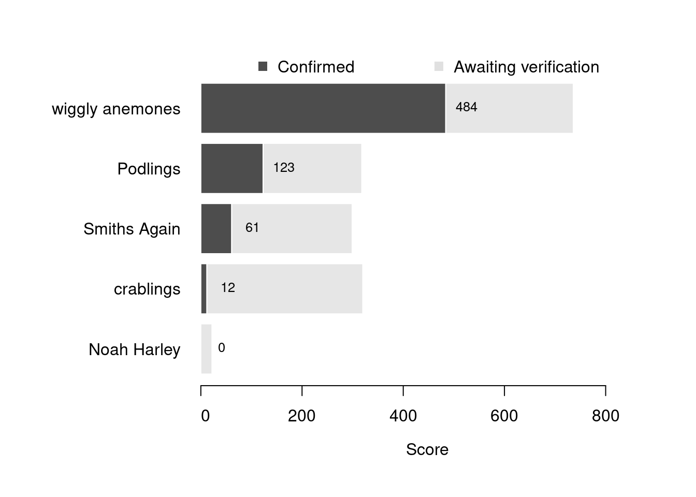

Content
You can view all the wildlife recorded at this event on iNaturalist.


| Records | 166 |
| Species | 58 |
| Verified species | 37 |
| Observers | 9 |
| Potential score | 1,255 |
| Confirmed score | 556 |
| Top verified species | Acanthocardia paucicostata |
| Top species rarity score | 69 |
| Registered participants | 28 |
| Children attending | 25 |
Congratulations to wiggly anemones for taking the gold medal in this BioBlitz Battle! And well done to everyone for a great game and some fantastic wildlife finds.
| Team | Records | Potential Score | Confirmed Score |
|---|---|---|---|
| wiggly anemones | 92 | 736 | 484 |
| Podlings | 20 | 318 | 123 |
| Smiths Again | 23 | 299 | 61 |
| crablings | 12 | 320 | 12 |
| Noah Harley | 3 | 22 | 0 |

| Participant | Records | Potential Score | Confirmed Score |
|---|---|---|---|
| eveahh | 74 | 839 | 484 |
| jerrypt | 15 | 262 | 101 |
| Maria Smith | 23 | 299 | 61 |
| nickj2209 | 18 | 111 | 23 |
| Ben | 4 | 56 | 22 |
| lippylid | 12 | 320 | 12 |
| noahharley | 3 | 22 | 0 |
| jenny0707 | 1 | 8 | 0 |
A total of 6 species have a verified rarity score of 26 or higher.


Community verified records only
Click any image to view the taxon on iNaturalist.
| Name | Rarity Score | |
|---|---|---|

|
poorly-ribbed cockle - Acanthocardia paucicostata | 69 |

|
Northern Quahog - Mercenaria mercenaria | 40 |

|
rusty rock - Hildenbrandia rubra | 28 |

|
Anomia ephippium | 27 |

|
Baked Bean Ascidian - Dendrodoa grossularia | 27 |

|
Common piddock - Pholas dactylus | 26 |

|
Japanese Littleneck - Ruditapes philippinarum | 23 |

|
Eelgrass - Zostera marina | 22 |

|
Queen scallop - Aequipecten opercularis | 18 |

|
Variegated Scallop - Mimachlamys varia | 15 |

|
European Sting Winkle - Ocenebra erinaceus | 15 |

|
Beaked Barnacle - Austrominius modestus | 14 |

|
Leafy Bryozoa - Flustra foliacea | 14 |

|
Sand Mason Worm - Lanice conchilega | 14 |

|
Pepper Dulse - Osmundea pinnatifida | 14 |

|
Netted Dogwhelk - Tritia reticulata | 13 |

|
Common Atlantic Slippersnail - Crepidula fornicata | 11 |

|
Pacific Oyster - Magallana gigas | 11 |

|
Irish Moss - Chondrus crispus | 10 |

|
Spiny Spider Crab - Maja brachydactyla | 10 |

|
European Common Cuttlefish - Sepia officinalis | 10 |

|
Broadleaf Sea Lettuce - Ulva lactuca | 10 |

|
Common Cockle - Cerastoderma edule | 9 |

|
Blue Mussel - Mytilus edulis | 9 |

|
Glass Shrimps - Palaemon | 9 |

|
Atlantic Beadlet Anemone - Actinia equina | 8 |

|
Knotted Wrack - Ascophyllum nodosum | 8 |

|
Common Whelk - Buccinum undatum | 8 |

|
sea kale - Crambe maritima | 8 |

|
Saw Wrack - Fucus serratus | 8 |

|
bladder wrack - Fucus vesiculosus | 8 |

|
True Bugs - Heteroptera | 8 |

|
Common Periwinkle - Littorina littorea | 8 |

|
Atlantic Dogwhelk - Nucella lapillus | 8 |

|
Common European Limpet - Patella vulgata | 8 |

|
European Green Crab - Carcinus maenas | 7 |

|
Gulls - Aves | 1 |